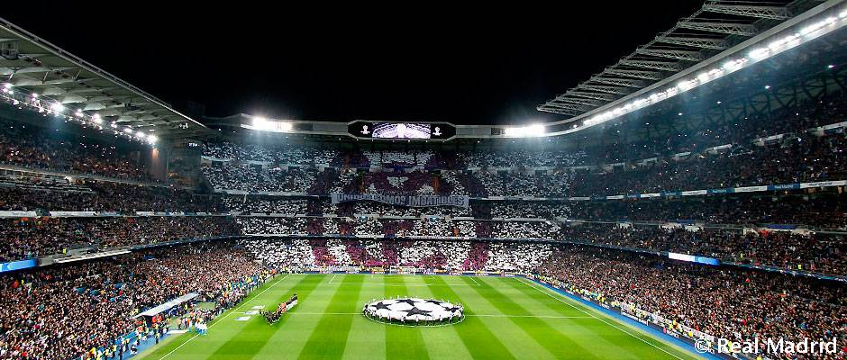

Football
Futbolli siç njihet pak a shumë në gjithë botën luhet në çdo kontinent. Futbolli eshte sporti më popullor se Bejzbolli, Basketbolli dhe Futbolli Amerikan të marrë së bashku. Futbolli i organizuar u lind në Britani. Anglia dhe Skocia ishin vendet themeluese të këtij sporti .
Klubi i parë futbollistik në botë Sheffield Football Club u themelua më 1857 nga Kolonel Nathaniel Cresswick dhe Major William Priest, dy oficerë ushtarakë anglezë.